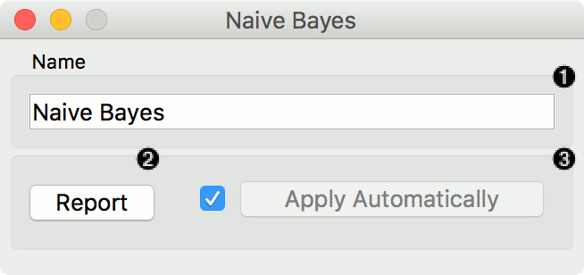
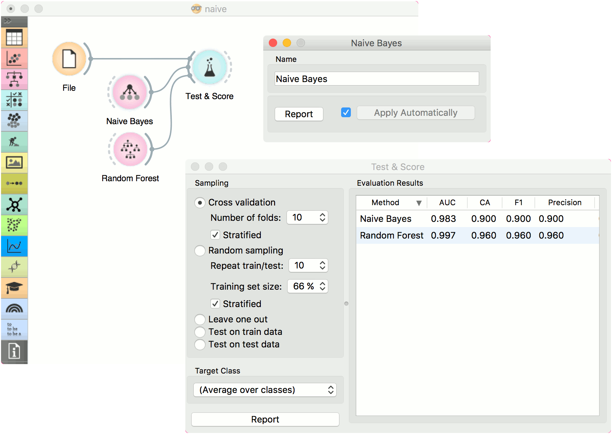
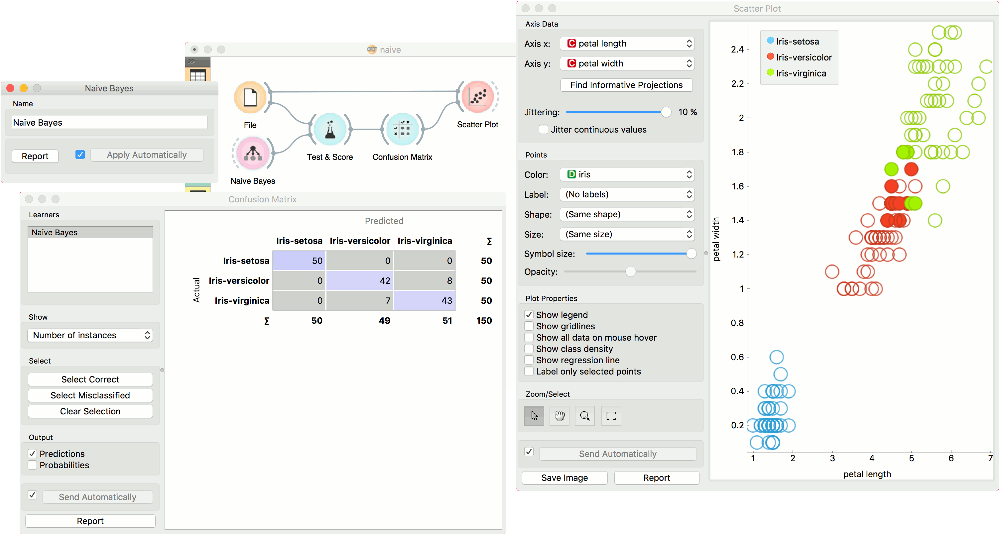

Naive Bayes
A fast and simple probabilistic classifier based on Bayes’ theorem with the assumption of feature independence.
Inputs
- Data: input dataset
- Preprocessor: preprocessing method(s)
Outputs
- Learner: naive bayes learning algorithm
- Model: trained model
Naive Bayes learns a Naive Bayesian model from the data. It only works for classification tasks.

This widget has two options: the name under which it will appear in other widgets and producing a report. The default name is Naive Bayes. When you change it, you need to press Apply.
Preprocessing
Naive Bayes uses default preprocessing when no other preprocessors are given. It executes them in the following order:
- removes empty columns
- discretizes numeric values to 4 bins with equal frequency
To remove default preprocessing, connect an empty Preprocess widget to the learner.
Examples
Here, we present two uses of this widget. First, we compare the results of the Naive Bayes with another model, the Random Forest. We connect iris data from File to Test & Score. We also connect Naive Bayes and Random Forest to Test & Score and observe their prediction scores.

The second schema shows the quality of predictions made with Naive Bayes. We feed the Test & Score widget a Naive Bayes learner and then send the data to the Confusion Matrix. We also connect Scatter Plot with File. Then we select the misclassified instances in the Confusion Matrix and show feed them to Scatter Plot. The bold dots in the scatterplot are the misclassified instances from Naive Bayes.
